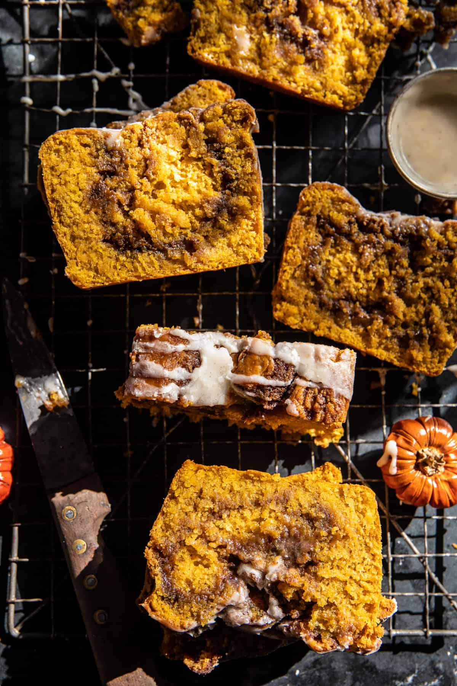

Pumpkin Butter Cinnamon Roll Bread

Ingredients
Cinnamon Swirl
- 1/2 cup dark brown sugar
- 6 tablespoons salted butter, at room temperature
- 1 tablespoon cinnamon
- 1 tablespoon all-purpose flour
Pumpkin Bread
- 1/3 cup melted coconut oil
- 1 cup pumpkin butter
- 1 large egg
- 1 tablespoon vanilla extract
- 1/3 cup maple syrup or honey
- 2/3 cup milk
- 2 cups all-purpose flour or whole wheat pastry flour
- 2 teaspoons pumpkin pie spice
- 1 tablespoon baking powder
- 1/4 teaspoon baking soda
- 1/2 teaspoon kosher salt
Icing (optional)
- 2-3 tablespoons milk
- 1 teaspoon vanilla extract
- 1 1/2 cups powdered sugar
Instructions
- Preheat the oven to 350° F. Butter a (9×5 inch) bread pan.
- To make the cinnamon swirl. In a bowl, mix the butter, brown sugar, cinnamon, and flour.
- Make the bread. In a large bowl, stir together the coconut oil, maple syrup (or honey), pumpkin butter, egg, vanilla, and milk until combined. Add the flour, pumpkin pie spice, baking powder, and salt. Mix until just combined.
- Spoon half the batter into the prepared bread pan. Dollop 2/3 of the cinnamon swirl over the batter. Swirl using a paring knife. Evenly spoon the remaining batter over. Dollop on the remaining cinnamon swirl. Swirl one more time.
- Bake for 55-60 minutes, or until the center is just set.
- Meanwhile, if desired, make the icing. Whisk all ingredients in a bowl. If needed, add milk to thin. Drizzle the bread with icing. Eat warm or let cool and store in an airtight container for up to 4 days. YUMMMM!